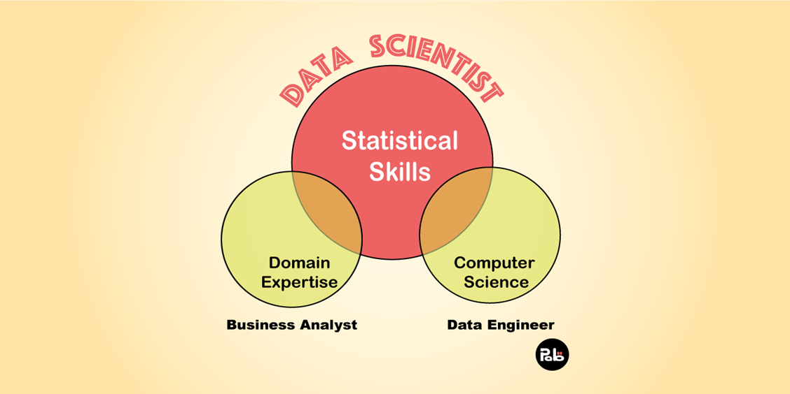
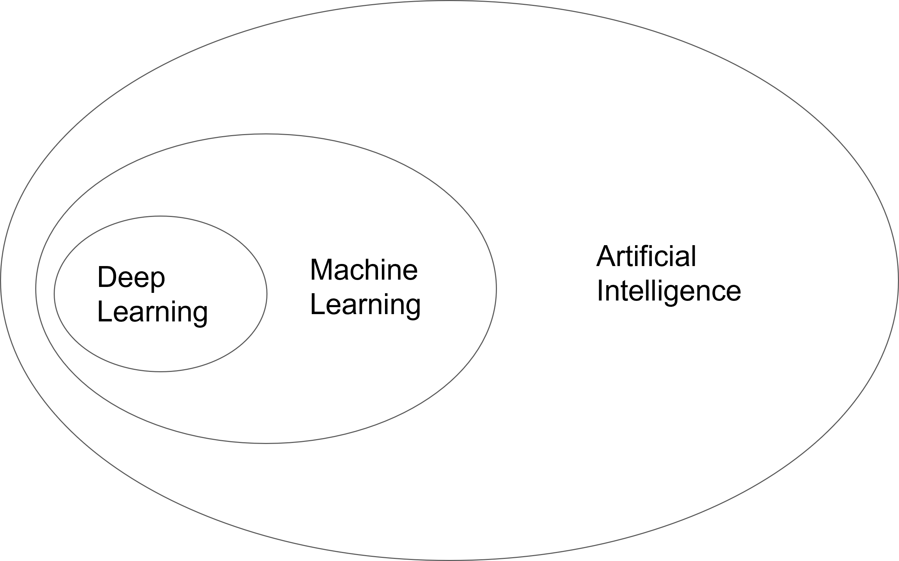

Do you remember AlphaGo? It is the first thinking machine to defeat a human champion in Go. In this class, we are going to explore the unknown world of machine learning, the technology that implements artificial intelligence.
Welcome to ML world
This course
Covers the fundamentals of machine learning, including:
Supervised and unsupervised learning algorithms
Regression, classification, and clustering
Model evaluation, feature selection, and regularization
Teaches algorithms such as:
Linear and logistic regression
Naive Bayes, decision trees, random forests, and kNN
K-means and Apriori
Covers advanced topics like natural language processing
Uses R for implementation and practical projects
By the end of the course, students will have a strong understanding of the basics of machine learning.
What is Data Science
Modern academic area helping people to draw useful information and intuition so that making them to make reasonable decisions
Steps in Data Science project
Understanding the business problem (문제 인식)
Data acquisition (데이터 수집)
Data preparation (데이터 전처리)
Exploratory data analysis (탐색적 분석 → 가설)
Data modeling (모델링 → 가설 검증 → 예측)
Visualization and communication (시각화를 통한 소통)
Deploy & maintenance (지속적인 피드백을 통한 모델 보완)
What is Data Science
Requirement

What is Machine Learning?
Actually ML is everywhere
Recommender Systems: Machine learning algorithms are used to recommend products, movies, music, and other items based on a person’s preferences and previous actions.
Fraud Detection: Banks and financial institutions use machine learning algorithms to detect suspicious transactions and prevent fraudulent activities.
Image and Speech Recognition: Machine learning algorithms are used in image and speech recognition systems, such as Siri and Google Assistant, to accurately transcribe and interpret user commands.
Email Filtering: Machine learning algorithms are used to classify emails as spam or not spam, helping to keep inboxes clutter-free.
Healthcare: Machine learning algorithms are used in healthcare to diagnose diseases, predict patient outcomes, and personalize treatment plans.
What is Machine Learning?
Actually ML is everywhere
Marketing: Machine learning algorithms are used in marketing to predict customer behavior, target advertising, and optimize pricing strategies.
Chatbots: Machine learning algorithms are used to build chatbots that can answer customer questions and provide support in real-time.
Autonomous Driving: Machine learning algorithms are used to develop self-driving cars that can navigate roads and make decisions based on real-time data.
Predictive Maintenance: Machine learning algorithms are used to predict when equipment and machinery are likely to fail, allowing companies to schedule maintenance before a breakdown occurs.
Natural Language Processing: Machine learning algorithms are used in natural language processing to translate languages, summarize text, and analyze sentiment in written or spoken language.
ML Concept
AI, ML, and Deep Learning
Artificial intelligence, machine learning, deep learning; these terms appear a lot in newspapers and books these days, right? Let’s summarize it first.
Machine learning, which we will learn in this class, is, as already mentioned, that a machine learns from data to create a model and predict new situations.
Deep learning is one of many techniques of machine learning.
Have you ever heard of artificial neural networks? Deep learning is one of the machine learning techniques that uses artificial neural networks.
AlphaGo, mentioned above, is also a machine learning technology that applies deep learning. In other words, deep learning exists within machine learning.
Deep learning learns large amounts of data through artificial neural networks.
Artificial intelligence is a technology that allows machines to mimic human behavior.
It’s a very broad concept, meaning any technology that makes you behave a little more humane.
After all, all of these technologies are meant to help people make decisions and act.
ML Concept
AI, ML, and Deep Learning

ML concept
ML Concept
Have you used ChatGPT?
ChatGPT is a part of the field of Machine Learning, specifically the subfield of Natural Language Processing (NLP).
It is a type of language model that is trained using deep learning techniques, such as deep neural networks.
In NLP, language models are used to generate text that is semantically and contextually appropriate given a prompt.
This is done by training the model on a large corpus of text data and using that training to generate new text that is similar to the text seen in the training data.
ChatGPT is a specific type of language model that is fine-tuned on a large corpus of conversational text, making it particularly well-suited for tasks such as generating responses in a chatbot or answering questions.
The transformer architecture and the large number of parameters in ChatGPT allow it to capture long-range dependencies between the input and output, making it capable of generating coherent and contextually appropriate text even when the prompt is very long.
What are you afraid of?
When you think of artificial intelligence, some people immediately think of Terminator or Ultron. You don’t have to be afraid.
This is the reality of AI
Because, a cute robot like below is enough to help our thought
The technologies that allow machines to think for themselves are still .. very, very rudimentary (elementary).
However, the development of technology is very fast, so if you know the principles and basics of machine learning and can apply it to your life, the future will be much brighter in 5 or 10 years.
Welcome again to ML Hogwarts
“Any sufficiently advanced technology is indistinguishable from magic” Arthur C. Clarke
Arthur Clark, now deceased science fiction writer, said this.
Things that only appeared in sci-fi movies when I was a kid are already happening.
With the development of the Internet and communications, truly magical things are already happening.
You now carry a supercomputer in your hand, right? (I mean, your smartphone!)
For me in the past, people who use smartphones today are almost wizards.
This is one of the things I am somewhat certain of: In the near future, programs called data science now will be used as easily as Excel, and machine learning will be used as widely as those using smartphones today, and anyone can use it.
Let’s learn magic a little earlier than others.
Welcome again to ML Hogwarts
Yes, we are a muggle but could be a great magician like her
Why is it better for a non-major (#muggle) to become a data scientist (#wizard)?
Why is it better for a non-major (#muggle) to become a data scientist (#wizard)?
Course Design
Pre-class
Prior to attending the offline (or online streaming Zoom class), students are expected to view the recorded lecture delivered by the lecturer.
They are encouraged to take an active role in their learning by studying the material independently.
The video covers the fundamental concepts of the Machine Learning algorithm, including its underlying theory when necessary.
To assess their level of understanding, students are required to submit discussion posts. This serves as a means for evaluating their comprehension of the material.
In-class
During the class, the lecturer will summarize the pre-class lecture and provide additional clarification on the concepts covered.
To reinforce their understanding, students will engage in hands-on practice with more advanced code. This will provide them with the opportunity to apply their knowledge and develop their coding skills.
When attendance falls below 1/3 in a class, it may result in a grade of F
This policy is in place to encourage regular attendance and ensure that all students have the opportunity to fully participate in the learning experience. It is the responsibility of the students to attend classes regularly and stay engaged in their education.
The Final Score for the PBL is calculated by multiplying the PBL Team Score with the Individual Peer Review Score.
Individual Peer Review Scores are obtained through an anonymous survey conducted within the group.
Data in use will be guided but not limited to them, Team can use their own data
Communication
Notices & Questions
Please join Kakao open-chat room
Personal counsel (Scholarship, recommendation letter, etc.)
CJ-counselling room (Anything but the class content)